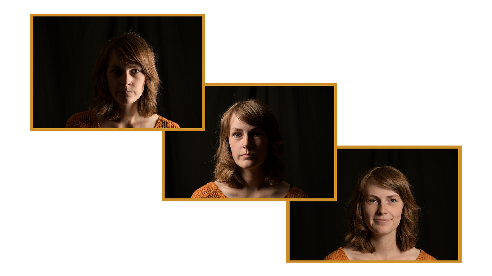
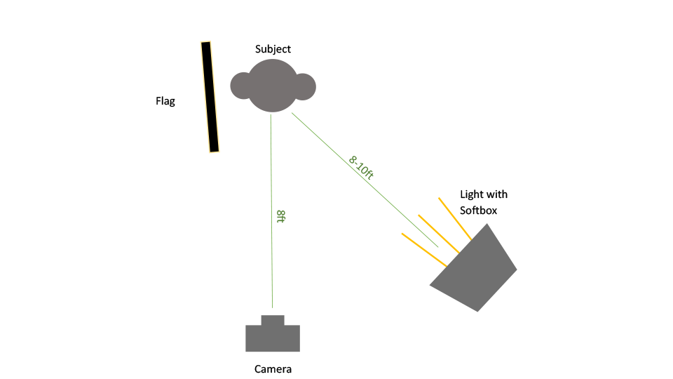
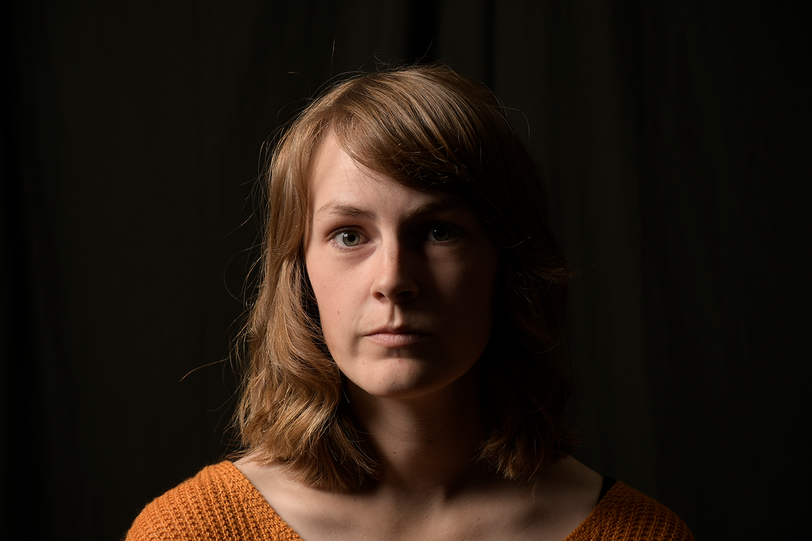

Classical Portrait Study
This project was a study on studio lighting. The goal was to set up the space to reproduce various traditional portait styles such as Loop, Butterfly, Rembrandt, and Split. Each portrait also features a different lighting ratio between the dark side and lit side of the subject.
Outline & Process
Of the 5 portraits taken, I documented the process behind creating the Rembrandt-style portrait. Rembrandt portraits are characterized by a face half in shadow with a small patch of light on the dark side’s cheek. For this shot, the goal is to create a light ratio of 8:1, or 3 stops difference. To attain this level of contrast, I used one light, a black flag, and a light with a softbox. The camera was set 8ft away from the subject, the light between 8-10ft away, and the flag as close to the subject as possible without being in frame.
Final Result
Figuring out the correct distances, F-Stop, ISO, aperture, and lighting levels took a lot of trial and error. The most difficult part of this portrait was capturing that small triangle of light under the eye of the subject while perserving the proper 8:1 lighting ratio.